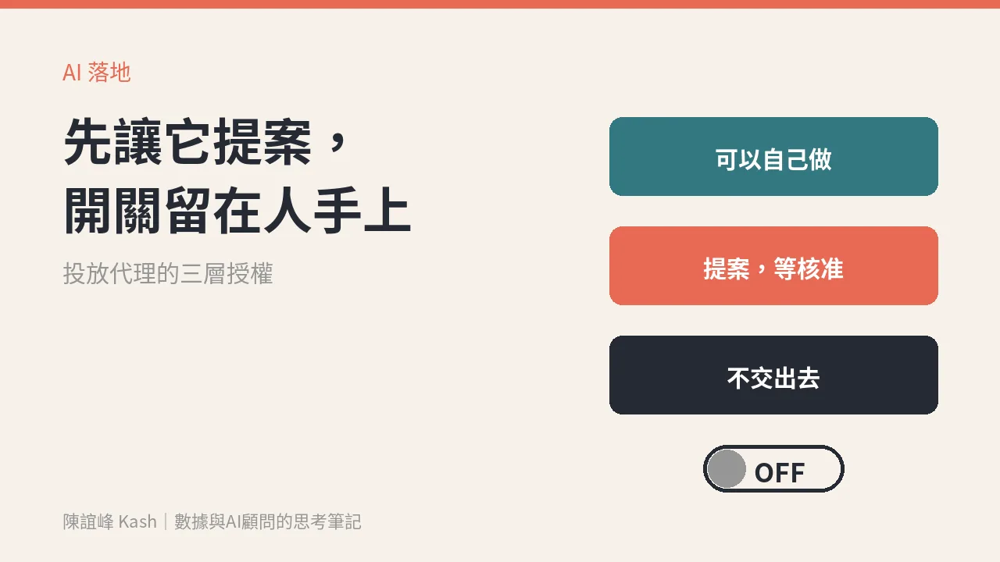

投放代理來了：先讓它提案，開關留在人手上
廣告投放，會是 AI 代理最早在行銷落地的一塊。主管要先決定的不是買哪一家，而是哪些決定可以交出去、它要對哪個數字負責。

行銷部門導入 AI，第一個真的「自己動手做事」的代理，可能會出現在廣告投放。
這是 Adam Schoenfeld 在 11 月 12 日那期電子報〈Paid media agents are coming〉的判斷。他長期追蹤 AI 與 B2B 行銷、業務工具，這次盤點了投放代理的廠商：他看的 24 家裡，有 18 家是在今年推出投放相關的動作。
我讀完最有感的不是廠商名單，而是一句話：今天的代理，多半是「它建議，人核准」。
為什麼是投放先落地
Adam 給了幾個理由，我用白話翻一下。
第一，結果相對看得到。投放有點擊、轉換、名單成本這些數字可以優化，比起品牌、內容這些靠品味的工作，更容易判斷做得好不好。
第二，它是「替換型」的採購。原本就有一筆給代理商或外包的預算，換成代理，老闆比較容易算帳。
第三，AI 做素材變體、組圖、剪輯越來越順手。
他也提醒，出錯的範圍在投放相對可控，不像寄錯信會一次打擾所有客戶。
現在的代理，開關都還在人手上
看廠商怎麼設計，就知道市場還沒準備好全自動：
- Tofu 會把活動建在客戶自己的廣告帳戶裡，預設是關閉的，由團隊裡的人打開。
- Petavue 的說法是：它提案，人核准之後，才會碰到廣告平台。
- Cognition 的團隊讓 AI 建 LinkedIn 活動，一律存成草稿，上線要另外一個「同意」。
也有人直接講出擔心。一位用 AI 全程跑 LinkedIn 和 Google 廣告的代理商負責人說，AI 出錯的時候，你會完全看不見。
所以我的看法是：投放代理該導入，但導入順序要對。先讓它提案，開關留在人手上。
主管先定三件事，再談買哪一家
一、它要對哪個數字負責？
這是最容易被跳過、也最致命的一題。代理會非常努力地優化你給它的數字。給它平台回報的轉換數，它就去衝轉換數。
但平台回報的轉換，不一定是生意。Adam 引用 Primer 的客戶資料：LinkedIn 每回報 4.4 次轉換，只有 1 次被確認是真的名單。
如果你的 CRM 接不回廣告，代理就只能對著平台的數字努力。數據不是報表，是下一筆生意；先把「什麼算一筆真的名單、一筆真的成交」定義清楚，再把它交給代理。
二、哪些決定可以交出去？
我建議畫成三層：
- 可以自己做：受眾名單更新、報表整理、素材的小幅變體。
- 要提案、等核准：開新活動、上新素材、出價或預算的調整超過約定範圍。
- 不交出去：總預算上限、品牌訊息、進新市場、對外承諾的優惠。
三、什麼情況要叫人？
先寫好停損條件，例如花費超過當日上限、名單成本連續幾天異常、素材被平台退件。碰到就停、就通知，不讓它自己想辦法。
買現成的，還是自己組？
Adam 把路分成兩條：直接買廠商的代理，或自己組代理、買零件，例如廣告平台開放的 MCP 和各種資料工具。
怎麼選，我會看一件事：你有沒有人顧資料和規則。
自己組，彈性大，但要有人維護資料串接、寫規則、看例外。買現成的，上手快，但你要看清楚它的核准流程、能不能接回你的 CRM、出錯時看得到什麼紀錄。
沒有人顧，買再好的代理，也只是把一個看不見的錯誤放大得更快。
週一可以先做的事
挑一個你正在跑的投放活動，寫下三行：
1. 它真正要帶來的生意數字是什麼。 2. 哪些調整可以不問我，哪些一定要先問我。 3. 什麼情況一出現，就要停下來找人。
這三行寫得出來，你就準備好讓代理提案了。寫不出來，問題不在 AI，在我們還沒想清楚要它幫什麼忙。